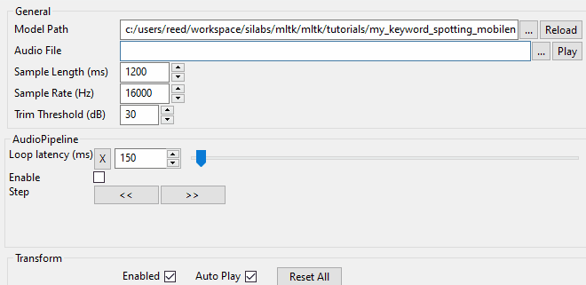

Model Optimization for MVP Hardware Accelerator¶
This tutorial describes how to optimize a keyword spotting model for the Silicon Lab’s development board featuring the MVP hardware accelerator. It uses the various tools offered by the MLTK to optimize a machine learning model so that it can efficiently run on the embedded hardware.
In this tutorial, we use the industry-standard classification model MobileNetV2 to detect the keywords:
left
right
up
down
stop
go
MobileNetV2 is a common and useful model because it is generic enough that it can be applied to most classification tasks but still runs efficiently on embedded devices.
Quick Links¶
GitHub Source - View this tutorial on Github
Run on Colab - Run this tutorial on Google Colab
Train in the “Cloud” - Vastly improve training times by training this model in the “cloud”
C++ Example Application - View this tutorial’s associated C++ example application
Machine Learning Model- View this tutorial’s associated machine learning model
Overview¶
In this tutorial, you will learn the following:
How to create a model specification using MobileNetV2
How to use the Model Profiler to profile the model on the development board
How to use the
view_audiocommand to view the spectrogram generated by the AudioFeatureGeneratorHow to adjust model parameters to fit within the resource constraints of the development board
How to train the model
Running this Tutorial¶
This tutorial assumes the MLTK has been installed and is available on the command-line
All commands below should run from a local terminal
In your local terminal, replace the
!mltkcommand withmltk(i.e. remove the!character to run the command)
Recommended Reading¶
Before doing this tutorial, it is recommended to review the following documentation:
MLTK Overview - An overview of the core concepts used by the MLTK
Keyword Spotting Overview - An overview of how keyword spotting works
Keyword Spotting Tutorial - Detailed tutorial describing how to create a Keyword Spotting model using the MLTK
Model Specification¶
The completed model specification for this tutorial may be found on Github: keyword_spotting_mobilenetv2.py.
This model is very similar to keyword_spotting_on_off.py with the following changes:
Uses MobileNetV2 instead of custom designed model
Keyword “classes” changed
AudioDataGeneratorSettings modified
This tutorial describes how to start with the keyword_spotting_on_off.py model specification and end up with the keyword_spotting_mobilenetv2.py.
Create the model specification file¶
First, copy the file keyword_spotting_on_off.py to your working directory and rename it to my_keyword_spotting_mobilenetv2.py (or any name you like, just be sure to update the commands below accordingly).
my_keyword_spotting_mobilenetv2.py is your model specification file. It contains everything needed to train, evaluate, and quantize your model so that it can run on an embedded device.
The rest of this tutorial describes how to modify this file to meet our project’s requirements.
Update the model description¶
Open the my_keyword_spotting_mobilenetv2.py model specification file in your favorite text editor and edit the model description:
my_model.description = 'Keyword spotting classifier using MobileNetV2'
Update the Keywords¶
Next, update the keywords we want this model to detect:
my_model.classes = ['left', 'right', 'up', 'down', 'stop', 'go', '_unknown_', '_silence_']
Update the AudioFeatureGenerator Settings¶
Next, let’s update the AudioFeatureGeneratorSettings. We want to do this because we are detecting more keywords and need to increase the quality of the generated spectrograms which will help the ML model better distinguish between the different keywords.
To help us adjust the AudioFeatureGenerator settings, the MLTK features the command: view_audio.
This command provides a GUI to view the generated spectrograms in real-time as the settings are adjusted.
# Launch the AudioFeatureGenerator GUI
!mltk view_audio my_keyword_spotting_mobilenetv2
Select an audio file¶
First, select an audio file to analyze. By default, our model’s audio samples may be found in:
<User Home Directory>/.mltk/datasets/speech_commands/v2

Adjust the AudioFeatureGenerator settings¶
Adjust the Sample Length to 1200 milliseconds. This effectively increases the audio buffer size to 1.2s. This is useful as it allows for longer words to fully fit within the buffer. It also increases the number of times the ML model can “see” the spectrogram generated from the keyword as it streams through the audio buffer. See the Keyword Spotting Overview for more details.
Note that increasing the sample length effectively increases the spectrogram’s height. You can also adjust the Window Size and Window Step to change the spectrogram’s effective height.
Additionally, increase the Num Channels to 49. This increases the number of frequency “bins” to include in the generated spectrogram which increases the spectrogram width.
Increasing the generated spectrogram’s dimensions increases its resolution and should (hopefully) help the ML model better distinguish between the different keywords. This comes at a cost, though, as it increases the ML model’s input size. Increasing the ML model’s input size increases the number of required ML model operations which reduces the inference time (i.e. the amount of time to execute the ML model).
Through experimentation, additional settings were also modified including:
The sample rate was set to 16kHz, this helps to reduce aliasing at the cost of double the RAM requirements
Noise reduction values modified to help with execution on the embedded device
In the model specification file, update the AudioFeatureGeneratorSettings to:
frontend_settings = AudioFeatureGeneratorSettings()
frontend_settings.sample_rate_hz = 16000 # We use 16k for slightly better performance at the cost of more RAM
frontend_settings.sample_length_ms = 1200 # We use a 1.2s buffer to ensure we can process a sample multiple times
frontend_settings.window_size_ms = 30
frontend_settings.window_step_ms = 20
frontend_settings.filterbank_n_channels = 49
frontend_settings.filterbank_upper_band_limit = 4000.0-1 # Spoken language usually only goes up to 4k
frontend_settings.filterbank_lower_band_limit = 125.0
frontend_settings.noise_reduction_enable = True
frontend_settings.noise_reduction_smoothing_bits = 10
frontend_settings.noise_reduction_even_smoothing = 0.025
frontend_settings.noise_reduction_odd_smoothing = 0.06
frontend_settings.noise_reduction_min_signal_remaining = 0.03
frontend_settings.pcan_enable = False
frontend_settings.pcan_strength = 0.95
frontend_settings.pcan_offset = 80.0
frontend_settings.pcan_gain_bits = 21
frontend_settings.log_scale_enable = True
frontend_settings.log_scale_shift = 6
Update Model Layout¶
Next, update the model layout to use the MobileNetV2 architecture.
To do this, first import the model into your model specification Python script.
Near the top of the Python script, add the following:
# Import the MobileNetV2 model
from mltk.models.shared import MobileNetV2
Next, near the bottom of your model specification script, update def my_model_builder(model: MyModel): with the following:
def my_model_builder(model: MyModel):
keras_model = MobileNetV2(
input_shape=model.input_shape,
classes=model.n_classes,
alpha=1.0,
weights=None
)
keras_model.compile(
loss=model.loss,
optimizer=model.optimizer,
metrics=model.metrics
)
return keras_model
my_model.build_model_function = my_model_builder
This creates a MobileNetV2 model with an alpha of 1.0. The alpha parameter may be used to tune the width multiplier or how many convolutional filters are used by a given layer of the model. Typically, the more convolutional filters the larger the model and thus the better its accuracy. The increased convolutional filters also increases the computational complexity and thus execution time of the model.
Summarize the model¶
As a quick sanity check, view a summary of the model. We should see the updated model description, classes (i.e. keywords), and MobileNetV2 architecture printed to the terminal.
NOTE: This may take awhile the first time this runs as the model’s dataset needs to be downloaded and extracted.
# Generate model summary
# Since the model hasn't been trained yet, we need to add the --build option
# Be sure to change the terminal's current directory to the model spec's directory
# e.g.: cd <same directory as my_keyword_spotting_mobilenetv2.py>
!mltk summarize my_keyword_spotting_mobilenetv2 --tflite --build
C:\Users\reed\workspace\silabs\mltk\.venv\lib\site-packages\keras\engine\functional.py:1410: CustomMaskWarning: Custom mask layers require a config and must override get_config. When loading, the custom mask layer must be passed to the custom_objects argument.
layer_config = serialize_layer_fn(layer)
fully_quantize: 0, inference_type: 6, input_inference_type: 9, output_inference_type: 9
Epoch 00001: LearningRateScheduler setting learning rate to 0.001.
Epoch 00002: LearningRateScheduler setting learning rate to 0.00095.
Epoch 00003: LearningRateScheduler setting learning rate to 0.0009025.
+-------+-------------------+------------------+------------------+-------------------------------------------------------+
| Index | OpCode | Input(s) | Output(s) | Config |
+-------+-------------------+------------------+------------------+-------------------------------------------------------+
| 0 | conv_2d | 59x49x1 (int8) | 30x25x32 (int8) | Padding:same stride:2x2 activation:relu6 |
| | | 3x3x1 (int8) | | |
| | | 32 (int32) | | |
| 1 | depthwise_conv_2d | 30x25x32 (int8) | 30x25x32 (int8) | Multipler:1 padding:same stride:1x1 activation:relu6 |
| | | 3x3x32 (int8) | | |
| | | 32 (int32) | | |
| 2 | conv_2d | 30x25x32 (int8) | 30x25x16 (int8) | Padding:same stride:1x1 activation:none |
| | | 1x1x32 (int8) | | |
| | | 16 (int32) | | |
| 3 | conv_2d | 30x25x16 (int8) | 30x25x96 (int8) | Padding:same stride:1x1 activation:relu6 |
| | | 1x1x16 (int8) | | |
| | | 96 (int32) | | |
| 4 | pad | 30x25x96 (int8) | 31x27x96 (int8) | BuiltinOptionsType=22 |
| | | 2 (int32) | | |
| 5 | depthwise_conv_2d | 31x27x96 (int8) | 15x13x96 (int8) | Multipler:1 padding:valid stride:2x2 activation:relu6 |
| | | 3x3x96 (int8) | | |
| | | 96 (int32) | | |
| 6 | conv_2d | 15x13x96 (int8) | 15x13x24 (int8) | Padding:same stride:1x1 activation:none |
| | | 1x1x96 (int8) | | |
| | | 24 (int32) | | |
| 7 | conv_2d | 15x13x24 (int8) | 15x13x144 (int8) | Padding:same stride:1x1 activation:relu6 |
| | | 1x1x24 (int8) | | |
| | | 144 (int32) | | |
| 8 | depthwise_conv_2d | 15x13x144 (int8) | 15x13x144 (int8) | Multipler:1 padding:same stride:1x1 activation:relu6 |
| | | 3x3x144 (int8) | | |
| | | 144 (int32) | | |
| 9 | conv_2d | 15x13x144 (int8) | 15x13x24 (int8) | Padding:same stride:1x1 activation:none |
| | | 1x1x144 (int8) | | |
| | | 24 (int32) | | |
| 10 | add | 15x13x24 (int8) | 15x13x24 (int8) | Activation:none |
| | | 15x13x24 (int8) | | |
| 11 | conv_2d | 15x13x24 (int8) | 15x13x144 (int8) | Padding:same stride:1x1 activation:relu6 |
| | | 1x1x24 (int8) | | |
| | | 144 (int32) | | |
| 12 | pad | 15x13x144 (int8) | 17x15x144 (int8) | BuiltinOptionsType=22 |
| | | 2 (int32) | | |
| 13 | depthwise_conv_2d | 17x15x144 (int8) | 8x7x144 (int8) | Multipler:1 padding:valid stride:2x2 activation:relu6 |
| | | 3x3x144 (int8) | | |
| | | 144 (int32) | | |
| 14 | conv_2d | 8x7x144 (int8) | 8x7x32 (int8) | Padding:same stride:1x1 activation:none |
| | | 1x1x144 (int8) | | |
| | | 32 (int32) | | |
| 15 | conv_2d | 8x7x32 (int8) | 8x7x192 (int8) | Padding:same stride:1x1 activation:relu6 |
| | | 1x1x32 (int8) | | |
| | | 192 (int32) | | |
| 16 | depthwise_conv_2d | 8x7x192 (int8) | 8x7x192 (int8) | Multipler:1 padding:same stride:1x1 activation:relu6 |
| | | 3x3x192 (int8) | | |
| | | 192 (int32) | | |
| 17 | conv_2d | 8x7x192 (int8) | 8x7x32 (int8) | Padding:same stride:1x1 activation:none |
| | | 1x1x192 (int8) | | |
| | | 32 (int32) | | |
| 18 | add | 8x7x32 (int8) | 8x7x32 (int8) | Activation:none |
| | | 8x7x32 (int8) | | |
| 19 | conv_2d | 8x7x32 (int8) | 8x7x192 (int8) | Padding:same stride:1x1 activation:relu6 |
| | | 1x1x32 (int8) | | |
| | | 192 (int32) | | |
| 20 | depthwise_conv_2d | 8x7x192 (int8) | 8x7x192 (int8) | Multipler:1 padding:same stride:1x1 activation:relu6 |
| | | 3x3x192 (int8) | | |
| | | 192 (int32) | | |
| 21 | conv_2d | 8x7x192 (int8) | 8x7x32 (int8) | Padding:same stride:1x1 activation:none |
| | | 1x1x192 (int8) | | |
| | | 32 (int32) | | |
| 22 | add | 8x7x32 (int8) | 8x7x32 (int8) | Activation:none |
| | | 8x7x32 (int8) | | |
| 23 | conv_2d | 8x7x32 (int8) | 8x7x192 (int8) | Padding:same stride:1x1 activation:relu6 |
| | | 1x1x32 (int8) | | |
| | | 192 (int32) | | |
| 24 | pad | 8x7x192 (int8) | 9x9x192 (int8) | BuiltinOptionsType=22 |
| | | 2 (int32) | | |
| 25 | depthwise_conv_2d | 9x9x192 (int8) | 4x4x192 (int8) | Multipler:1 padding:valid stride:2x2 activation:relu6 |
| | | 3x3x192 (int8) | | |
| | | 192 (int32) | | |
| 26 | conv_2d | 4x4x192 (int8) | 4x4x64 (int8) | Padding:same stride:1x1 activation:none |
| | | 1x1x192 (int8) | | |
| | | 64 (int32) | | |
| 27 | conv_2d | 4x4x64 (int8) | 4x4x384 (int8) | Padding:same stride:1x1 activation:relu6 |
| | | 1x1x64 (int8) | | |
| | | 384 (int32) | | |
| 28 | depthwise_conv_2d | 4x4x384 (int8) | 4x4x384 (int8) | Multipler:1 padding:same stride:1x1 activation:relu6 |
| | | 3x3x384 (int8) | | |
| | | 384 (int32) | | |
| 29 | conv_2d | 4x4x384 (int8) | 4x4x64 (int8) | Padding:same stride:1x1 activation:none |
| | | 1x1x384 (int8) | | |
| | | 64 (int32) | | |
| 30 | add | 4x4x64 (int8) | 4x4x64 (int8) | Activation:none |
| | | 4x4x64 (int8) | | |
| 31 | conv_2d | 4x4x64 (int8) | 4x4x384 (int8) | Padding:same stride:1x1 activation:relu6 |
| | | 1x1x64 (int8) | | |
| | | 384 (int32) | | |
| 32 | depthwise_conv_2d | 4x4x384 (int8) | 4x4x384 (int8) | Multipler:1 padding:same stride:1x1 activation:relu6 |
| | | 3x3x384 (int8) | | |
| | | 384 (int32) | | |
| 33 | conv_2d | 4x4x384 (int8) | 4x4x64 (int8) | Padding:same stride:1x1 activation:none |
| | | 1x1x384 (int8) | | |
| | | 64 (int32) | | |
| 34 | add | 4x4x64 (int8) | 4x4x64 (int8) | Activation:none |
| | | 4x4x64 (int8) | | |
| 35 | conv_2d | 4x4x64 (int8) | 4x4x384 (int8) | Padding:same stride:1x1 activation:relu6 |
| | | 1x1x64 (int8) | | |
| | | 384 (int32) | | |
| 36 | depthwise_conv_2d | 4x4x384 (int8) | 4x4x384 (int8) | Multipler:1 padding:same stride:1x1 activation:relu6 |
| | | 3x3x384 (int8) | | |
| | | 384 (int32) | | |
| 37 | conv_2d | 4x4x384 (int8) | 4x4x64 (int8) | Padding:same stride:1x1 activation:none |
| | | 1x1x384 (int8) | | |
| | | 64 (int32) | | |
| 38 | add | 4x4x64 (int8) | 4x4x64 (int8) | Activation:none |
| | | 4x4x64 (int8) | | |
| 39 | conv_2d | 4x4x64 (int8) | 4x4x384 (int8) | Padding:same stride:1x1 activation:relu6 |
| | | 1x1x64 (int8) | | |
| | | 384 (int32) | | |
| 40 | depthwise_conv_2d | 4x4x384 (int8) | 4x4x384 (int8) | Multipler:1 padding:same stride:1x1 activation:relu6 |
| | | 3x3x384 (int8) | | |
| | | 384 (int32) | | |
| 41 | conv_2d | 4x4x384 (int8) | 4x4x96 (int8) | Padding:same stride:1x1 activation:none |
| | | 1x1x384 (int8) | | |
| | | 96 (int32) | | |
| 42 | conv_2d | 4x4x96 (int8) | 4x4x576 (int8) | Padding:same stride:1x1 activation:relu6 |
| | | 1x1x96 (int8) | | |
| | | 576 (int32) | | |
| 43 | depthwise_conv_2d | 4x4x576 (int8) | 4x4x576 (int8) | Multipler:1 padding:same stride:1x1 activation:relu6 |
| | | 3x3x576 (int8) | | |
| | | 576 (int32) | | |
| 44 | conv_2d | 4x4x576 (int8) | 4x4x96 (int8) | Padding:same stride:1x1 activation:none |
| | | 1x1x576 (int8) | | |
| | | 96 (int32) | | |
| 45 | add | 4x4x96 (int8) | 4x4x96 (int8) | Activation:none |
| | | 4x4x96 (int8) | | |
| 46 | conv_2d | 4x4x96 (int8) | 4x4x576 (int8) | Padding:same stride:1x1 activation:relu6 |
| | | 1x1x96 (int8) | | |
| | | 576 (int32) | | |
| 47 | depthwise_conv_2d | 4x4x576 (int8) | 4x4x576 (int8) | Multipler:1 padding:same stride:1x1 activation:relu6 |
| | | 3x3x576 (int8) | | |
| | | 576 (int32) | | |
| 48 | conv_2d | 4x4x576 (int8) | 4x4x96 (int8) | Padding:same stride:1x1 activation:none |
| | | 1x1x576 (int8) | | |
| | | 96 (int32) | | |
| 49 | add | 4x4x96 (int8) | 4x4x96 (int8) | Activation:none |
| | | 4x4x96 (int8) | | |
| 50 | conv_2d | 4x4x96 (int8) | 4x4x576 (int8) | Padding:same stride:1x1 activation:relu6 |
| | | 1x1x96 (int8) | | |
| | | 576 (int32) | | |
| 51 | pad | 4x4x576 (int8) | 5x5x576 (int8) | BuiltinOptionsType=22 |
| | | 2 (int32) | | |
| 52 | depthwise_conv_2d | 5x5x576 (int8) | 2x2x576 (int8) | Multipler:1 padding:valid stride:2x2 activation:relu6 |
| | | 3x3x576 (int8) | | |
| | | 576 (int32) | | |
| 53 | conv_2d | 2x2x576 (int8) | 2x2x160 (int8) | Padding:same stride:1x1 activation:none |
| | | 1x1x576 (int8) | | |
| | | 160 (int32) | | |
| 54 | conv_2d | 2x2x160 (int8) | 2x2x960 (int8) | Padding:same stride:1x1 activation:relu6 |
| | | 1x1x160 (int8) | | |
| | | 960 (int32) | | |
| 55 | depthwise_conv_2d | 2x2x960 (int8) | 2x2x960 (int8) | Multipler:1 padding:same stride:1x1 activation:relu6 |
| | | 3x3x960 (int8) | | |
| | | 960 (int32) | | |
| 56 | conv_2d | 2x2x960 (int8) | 2x2x160 (int8) | Padding:same stride:1x1 activation:none |
| | | 1x1x960 (int8) | | |
| | | 160 (int32) | | |
| 57 | add | 2x2x160 (int8) | 2x2x160 (int8) | Activation:none |
| | | 2x2x160 (int8) | | |
| 58 | conv_2d | 2x2x160 (int8) | 2x2x960 (int8) | Padding:same stride:1x1 activation:relu6 |
| | | 1x1x160 (int8) | | |
| | | 960 (int32) | | |
| 59 | depthwise_conv_2d | 2x2x960 (int8) | 2x2x960 (int8) | Multipler:1 padding:same stride:1x1 activation:relu6 |
| | | 3x3x960 (int8) | | |
| | | 960 (int32) | | |
| 60 | conv_2d | 2x2x960 (int8) | 2x2x160 (int8) | Padding:same stride:1x1 activation:none |
| | | 1x1x960 (int8) | | |
| | | 160 (int32) | | |
| 61 | add | 2x2x160 (int8) | 2x2x160 (int8) | Activation:none |
| | | 2x2x160 (int8) | | |
| 62 | conv_2d | 2x2x160 (int8) | 2x2x960 (int8) | Padding:same stride:1x1 activation:relu6 |
| | | 1x1x160 (int8) | | |
| | | 960 (int32) | | |
| 63 | depthwise_conv_2d | 2x2x960 (int8) | 2x2x960 (int8) | Multipler:1 padding:same stride:1x1 activation:relu6 |
| | | 3x3x960 (int8) | | |
| | | 960 (int32) | | |
| 64 | conv_2d | 2x2x960 (int8) | 2x2x320 (int8) | Padding:same stride:1x1 activation:none |
| | | 1x1x960 (int8) | | |
| | | 320 (int32) | | |
| 65 | conv_2d | 2x2x320 (int8) | 2x2x1280 (int8) | Padding:valid stride:1x1 activation:relu6 |
| | | 1x1x320 (int8) | | |
| | | 1280 (int32) | | |
| 66 | mean | 2x2x1280 (int8) | 1280 (int8) | BuiltinOptionsType=27 |
| | | 2 (int32) | | |
| 67 | fully_connected | 1280 (int8) | 8 (int8) | Activation:none |
| | | 1280 (int8) | | |
| | | 8 (int32) | | |
| 68 | softmax | 8 (int8) | 8 (int8) | BuiltinOptionsType=9 |
+-------+-------------------+------------------+------------------+-------------------------------------------------------+
Total MACs: 21.925 M
Total OPs: 45.199 M
Name: my_keyword_spotting_mobilenetv2
Version: 1
Description: Keyword spotting classifier using MobileNetV2
Classes: left, right, up, down, stop, go, _unknown_, _silence_
hash: 120e1504bcad5f01e644acf9d21b66ff
date: 2021-12-14T21:49:56.975Z
average_window_duration_ms: 1000
detection_threshold: 150
suppression_ms: 750
minimum_count: 3
volume_db: 20
latency_ms: 0
log_level: info
samplewise_norm.rescale: 0
samplewise_norm.mean_and_std: False
fe.sample_rate_hz: 16000
fe.sample_length_ms: 1200
fe.window_size_ms: 30
fe.window_step_ms: 20
fe.filterbank_n_channels: 49
fe.filterbank_upper_band_limit: 3999.0
fe.filterbank_lower_band_limit: 125.0
fe.noise_reduction_enable: True
fe.noise_reduction_smoothing_bits: 10
fe.noise_reduction_even_smoothing: 0.02500000037252903
fe.noise_reduction_odd_smoothing: 0.05999999865889549
fe.noise_reduction_min_signal_remaining: 0.029999999329447746
fe.pcan_enable: False
fe.pcan_strength: 0.949999988079071
fe.pcan_offset: 80.0
fe.pcan_gain_bits: 21
fe.log_scale_enable: True
fe.log_scale_shift: 6
fe.fft_length: 512
.tflite file size: 2.7MB
From the summary, we can see that the model file size, 2.7MB, is too large to fit on our target hardware which has 1.5MB of flash.
Let’s reduce MobileNetV2’s alpha parameter which will reduce the number of convolutional filters used by the model.
Update your model specification with:
keras_model = MobileNetV2(
input_shape=model.input_shape,
classes=model.n_classes,
alpha=0.5, # Change the alpha parameter to 0.5, which reduces the number of layers in the model
weights=None
)
Then re-run the model summary command:
# Re-generate model summary
# Since the model hasn't been trained yet, we need to add the --build option
# Be sure to change the terminal's current directory to the model spec's directory
# e.g.: cd <same directory as my_keyword_spotting_mobilenetv2.py>
!mltk summarize my_keyword_spotting_mobilenetv2 --tflite --build
Epoch 00001: LearningRateScheduler setting learning rate to 0.001.
Epoch 00002: LearningRateScheduler setting learning rate to 0.00095.
C:\Users\reed\workspace\silabs\mltk\.venv\lib\site-packages\keras\engine\functional.py:1410: CustomMaskWarning: Custom mask layers require a config and must override get_config. When loading, the custom mask layer must be passed to the custom_objects argument.
layer_config = serialize_layer_fn(layer)
fully_quantize: 0, inference_type: 6, input_inference_type: 9, output_inference_type: 9
Epoch 00003: LearningRateScheduler setting learning rate to 0.0009025.
+-------+-------------------+-----------------+-----------------+-------------------------------------------------------+
| Index | OpCode | Input(s) | Output(s) | Config |
+-------+-------------------+-----------------+-----------------+-------------------------------------------------------+
| 0 | conv_2d | 59x49x1 (int8) | 30x25x16 (int8) | Padding:same stride:2x2 activation:relu6 |
| | | 3x3x1 (int8) | | |
| | | 16 (int32) | | |
| 1 | depthwise_conv_2d | 30x25x16 (int8) | 30x25x16 (int8) | Multipler:1 padding:same stride:1x1 activation:relu6 |
| | | 3x3x16 (int8) | | |
| | | 16 (int32) | | |
| 2 | conv_2d | 30x25x16 (int8) | 30x25x8 (int8) | Padding:same stride:1x1 activation:none |
| | | 1x1x16 (int8) | | |
| | | 8 (int32) | | |
| 3 | conv_2d | 30x25x8 (int8) | 30x25x48 (int8) | Padding:same stride:1x1 activation:relu6 |
| | | 1x1x8 (int8) | | |
| | | 48 (int32) | | |
| 4 | pad | 30x25x48 (int8) | 31x27x48 (int8) | BuiltinOptionsType=22 |
| | | 2 (int32) | | |
| 5 | depthwise_conv_2d | 31x27x48 (int8) | 15x13x48 (int8) | Multipler:1 padding:valid stride:2x2 activation:relu6 |
| | | 3x3x48 (int8) | | |
| | | 48 (int32) | | |
| 6 | conv_2d | 15x13x48 (int8) | 15x13x16 (int8) | Padding:same stride:1x1 activation:none |
| | | 1x1x48 (int8) | | |
| | | 16 (int32) | | |
| 7 | conv_2d | 15x13x16 (int8) | 15x13x96 (int8) | Padding:same stride:1x1 activation:relu6 |
| | | 1x1x16 (int8) | | |
| | | 96 (int32) | | |
| 8 | depthwise_conv_2d | 15x13x96 (int8) | 15x13x96 (int8) | Multipler:1 padding:same stride:1x1 activation:relu6 |
| | | 3x3x96 (int8) | | |
| | | 96 (int32) | | |
| 9 | conv_2d | 15x13x96 (int8) | 15x13x16 (int8) | Padding:same stride:1x1 activation:none |
| | | 1x1x96 (int8) | | |
| | | 16 (int32) | | |
| 10 | add | 15x13x16 (int8) | 15x13x16 (int8) | Activation:none |
| | | 15x13x16 (int8) | | |
| 11 | conv_2d | 15x13x16 (int8) | 15x13x96 (int8) | Padding:same stride:1x1 activation:relu6 |
| | | 1x1x16 (int8) | | |
| | | 96 (int32) | | |
| 12 | pad | 15x13x96 (int8) | 17x15x96 (int8) | BuiltinOptionsType=22 |
| | | 2 (int32) | | |
| 13 | depthwise_conv_2d | 17x15x96 (int8) | 8x7x96 (int8) | Multipler:1 padding:valid stride:2x2 activation:relu6 |
| | | 3x3x96 (int8) | | |
| | | 96 (int32) | | |
| 14 | conv_2d | 8x7x96 (int8) | 8x7x16 (int8) | Padding:same stride:1x1 activation:none |
| | | 1x1x96 (int8) | | |
| | | 16 (int32) | | |
| 15 | conv_2d | 8x7x16 (int8) | 8x7x96 (int8) | Padding:same stride:1x1 activation:relu6 |
| | | 1x1x16 (int8) | | |
| | | 96 (int32) | | |
| 16 | depthwise_conv_2d | 8x7x96 (int8) | 8x7x96 (int8) | Multipler:1 padding:same stride:1x1 activation:relu6 |
| | | 3x3x96 (int8) | | |
| | | 96 (int32) | | |
| 17 | conv_2d | 8x7x96 (int8) | 8x7x16 (int8) | Padding:same stride:1x1 activation:none |
| | | 1x1x96 (int8) | | |
| | | 16 (int32) | | |
| 18 | add | 8x7x16 (int8) | 8x7x16 (int8) | Activation:none |
| | | 8x7x16 (int8) | | |
| 19 | conv_2d | 8x7x16 (int8) | 8x7x96 (int8) | Padding:same stride:1x1 activation:relu6 |
| | | 1x1x16 (int8) | | |
| | | 96 (int32) | | |
| 20 | depthwise_conv_2d | 8x7x96 (int8) | 8x7x96 (int8) | Multipler:1 padding:same stride:1x1 activation:relu6 |
| | | 3x3x96 (int8) | | |
| | | 96 (int32) | | |
| 21 | conv_2d | 8x7x96 (int8) | 8x7x16 (int8) | Padding:same stride:1x1 activation:none |
| | | 1x1x96 (int8) | | |
| | | 16 (int32) | | |
| 22 | add | 8x7x16 (int8) | 8x7x16 (int8) | Activation:none |
| | | 8x7x16 (int8) | | |
| 23 | conv_2d | 8x7x16 (int8) | 8x7x96 (int8) | Padding:same stride:1x1 activation:relu6 |
| | | 1x1x16 (int8) | | |
| | | 96 (int32) | | |
| 24 | pad | 8x7x96 (int8) | 9x9x96 (int8) | BuiltinOptionsType=22 |
| | | 2 (int32) | | |
| 25 | depthwise_conv_2d | 9x9x96 (int8) | 4x4x96 (int8) | Multipler:1 padding:valid stride:2x2 activation:relu6 |
| | | 3x3x96 (int8) | | |
| | | 96 (int32) | | |
| 26 | conv_2d | 4x4x96 (int8) | 4x4x32 (int8) | Padding:same stride:1x1 activation:none |
| | | 1x1x96 (int8) | | |
| | | 32 (int32) | | |
| 27 | conv_2d | 4x4x32 (int8) | 4x4x192 (int8) | Padding:same stride:1x1 activation:relu6 |
| | | 1x1x32 (int8) | | |
| | | 192 (int32) | | |
| 28 | depthwise_conv_2d | 4x4x192 (int8) | 4x4x192 (int8) | Multipler:1 padding:same stride:1x1 activation:relu6 |
| | | 3x3x192 (int8) | | |
| | | 192 (int32) | | |
| 29 | conv_2d | 4x4x192 (int8) | 4x4x32 (int8) | Padding:same stride:1x1 activation:none |
| | | 1x1x192 (int8) | | |
| | | 32 (int32) | | |
| 30 | add | 4x4x32 (int8) | 4x4x32 (int8) | Activation:none |
| | | 4x4x32 (int8) | | |
| 31 | conv_2d | 4x4x32 (int8) | 4x4x192 (int8) | Padding:same stride:1x1 activation:relu6 |
| | | 1x1x32 (int8) | | |
| | | 192 (int32) | | |
| 32 | depthwise_conv_2d | 4x4x192 (int8) | 4x4x192 (int8) | Multipler:1 padding:same stride:1x1 activation:relu6 |
| | | 3x3x192 (int8) | | |
| | | 192 (int32) | | |
| 33 | conv_2d | 4x4x192 (int8) | 4x4x32 (int8) | Padding:same stride:1x1 activation:none |
| | | 1x1x192 (int8) | | |
| | | 32 (int32) | | |
| 34 | add | 4x4x32 (int8) | 4x4x32 (int8) | Activation:none |
| | | 4x4x32 (int8) | | |
| 35 | conv_2d | 4x4x32 (int8) | 4x4x192 (int8) | Padding:same stride:1x1 activation:relu6 |
| | | 1x1x32 (int8) | | |
| | | 192 (int32) | | |
| 36 | depthwise_conv_2d | 4x4x192 (int8) | 4x4x192 (int8) | Multipler:1 padding:same stride:1x1 activation:relu6 |
| | | 3x3x192 (int8) | | |
| | | 192 (int32) | | |
| 37 | conv_2d | 4x4x192 (int8) | 4x4x32 (int8) | Padding:same stride:1x1 activation:none |
| | | 1x1x192 (int8) | | |
| | | 32 (int32) | | |
| 38 | add | 4x4x32 (int8) | 4x4x32 (int8) | Activation:none |
| | | 4x4x32 (int8) | | |
| 39 | conv_2d | 4x4x32 (int8) | 4x4x192 (int8) | Padding:same stride:1x1 activation:relu6 |
| | | 1x1x32 (int8) | | |
| | | 192 (int32) | | |
| 40 | depthwise_conv_2d | 4x4x192 (int8) | 4x4x192 (int8) | Multipler:1 padding:same stride:1x1 activation:relu6 |
| | | 3x3x192 (int8) | | |
| | | 192 (int32) | | |
| 41 | conv_2d | 4x4x192 (int8) | 4x4x48 (int8) | Padding:same stride:1x1 activation:none |
| | | 1x1x192 (int8) | | |
| | | 48 (int32) | | |
| 42 | conv_2d | 4x4x48 (int8) | 4x4x288 (int8) | Padding:same stride:1x1 activation:relu6 |
| | | 1x1x48 (int8) | | |
| | | 288 (int32) | | |
| 43 | depthwise_conv_2d | 4x4x288 (int8) | 4x4x288 (int8) | Multipler:1 padding:same stride:1x1 activation:relu6 |
| | | 3x3x288 (int8) | | |
| | | 288 (int32) | | |
| 44 | conv_2d | 4x4x288 (int8) | 4x4x48 (int8) | Padding:same stride:1x1 activation:none |
| | | 1x1x288 (int8) | | |
| | | 48 (int32) | | |
| 45 | add | 4x4x48 (int8) | 4x4x48 (int8) | Activation:none |
| | | 4x4x48 (int8) | | |
| 46 | conv_2d | 4x4x48 (int8) | 4x4x288 (int8) | Padding:same stride:1x1 activation:relu6 |
| | | 1x1x48 (int8) | | |
| | | 288 (int32) | | |
| 47 | depthwise_conv_2d | 4x4x288 (int8) | 4x4x288 (int8) | Multipler:1 padding:same stride:1x1 activation:relu6 |
| | | 3x3x288 (int8) | | |
| | | 288 (int32) | | |
| 48 | conv_2d | 4x4x288 (int8) | 4x4x48 (int8) | Padding:same stride:1x1 activation:none |
| | | 1x1x288 (int8) | | |
| | | 48 (int32) | | |
| 49 | add | 4x4x48 (int8) | 4x4x48 (int8) | Activation:none |
| | | 4x4x48 (int8) | | |
| 50 | conv_2d | 4x4x48 (int8) | 4x4x288 (int8) | Padding:same stride:1x1 activation:relu6 |
| | | 1x1x48 (int8) | | |
| | | 288 (int32) | | |
| 51 | pad | 4x4x288 (int8) | 5x5x288 (int8) | BuiltinOptionsType=22 |
| | | 2 (int32) | | |
| 52 | depthwise_conv_2d | 5x5x288 (int8) | 2x2x288 (int8) | Multipler:1 padding:valid stride:2x2 activation:relu6 |
| | | 3x3x288 (int8) | | |
| | | 288 (int32) | | |
| 53 | conv_2d | 2x2x288 (int8) | 2x2x80 (int8) | Padding:same stride:1x1 activation:none |
| | | 1x1x288 (int8) | | |
| | | 80 (int32) | | |
| 54 | conv_2d | 2x2x80 (int8) | 2x2x480 (int8) | Padding:same stride:1x1 activation:relu6 |
| | | 1x1x80 (int8) | | |
| | | 480 (int32) | | |
| 55 | depthwise_conv_2d | 2x2x480 (int8) | 2x2x480 (int8) | Multipler:1 padding:same stride:1x1 activation:relu6 |
| | | 3x3x480 (int8) | | |
| | | 480 (int32) | | |
| 56 | conv_2d | 2x2x480 (int8) | 2x2x80 (int8) | Padding:same stride:1x1 activation:none |
| | | 1x1x480 (int8) | | |
| | | 80 (int32) | | |
| 57 | add | 2x2x80 (int8) | 2x2x80 (int8) | Activation:none |
| | | 2x2x80 (int8) | | |
| 58 | conv_2d | 2x2x80 (int8) | 2x2x480 (int8) | Padding:same stride:1x1 activation:relu6 |
| | | 1x1x80 (int8) | | |
| | | 480 (int32) | | |
| 59 | depthwise_conv_2d | 2x2x480 (int8) | 2x2x480 (int8) | Multipler:1 padding:same stride:1x1 activation:relu6 |
| | | 3x3x480 (int8) | | |
| | | 480 (int32) | | |
| 60 | conv_2d | 2x2x480 (int8) | 2x2x80 (int8) | Padding:same stride:1x1 activation:none |
| | | 1x1x480 (int8) | | |
| | | 80 (int32) | | |
| 61 | add | 2x2x80 (int8) | 2x2x80 (int8) | Activation:none |
| | | 2x2x80 (int8) | | |
| 62 | conv_2d | 2x2x80 (int8) | 2x2x480 (int8) | Padding:same stride:1x1 activation:relu6 |
| | | 1x1x80 (int8) | | |
| | | 480 (int32) | | |
| 63 | depthwise_conv_2d | 2x2x480 (int8) | 2x2x480 (int8) | Multipler:1 padding:same stride:1x1 activation:relu6 |
| | | 3x3x480 (int8) | | |
| | | 480 (int32) | | |
| 64 | conv_2d | 2x2x480 (int8) | 2x2x160 (int8) | Padding:same stride:1x1 activation:none |
| | | 1x1x480 (int8) | | |
| | | 160 (int32) | | |
| 65 | conv_2d | 2x2x160 (int8) | 2x2x1280 (int8) | Padding:valid stride:1x1 activation:relu6 |
| | | 1x1x160 (int8) | | |
| | | 1280 (int32) | | |
| 66 | mean | 2x2x1280 (int8) | 1280 (int8) | BuiltinOptionsType=27 |
| | | 2 (int32) | | |
| 67 | fully_connected | 1280 (int8) | 8 (int8) | Activation:none |
| | | 1280 (int8) | | |
| | | 8 (int32) | | |
| 68 | softmax | 8 (int8) | 8 (int8) | BuiltinOptionsType=9 |
+-------+-------------------+-----------------+-----------------+-------------------------------------------------------+
Total MACs: 6.819 M
Total OPs: 14.371 M
Name: my_keyword_spotting_mobilenetv2
Version: 1
Description: Keyword spotting classifier using MobileNetV2
Classes: left, right, up, down, stop, go, _unknown_, _silence_
hash: d226b3204bbaf021713d425e9bdf623c
date: 2021-12-14T21:45:49.895Z
average_window_duration_ms: 1000
detection_threshold: 150
suppression_ms: 750
minimum_count: 3
volume_db: 20
latency_ms: 0
log_level: info
samplewise_norm.rescale: 0
samplewise_norm.mean_and_std: False
fe.sample_rate_hz: 16000
fe.sample_length_ms: 1200
fe.window_size_ms: 30
fe.window_step_ms: 20
fe.filterbank_n_channels: 49
fe.filterbank_upper_band_limit: 3999.0
fe.filterbank_lower_band_limit: 125.0
fe.noise_reduction_enable: True
fe.noise_reduction_smoothing_bits: 10
fe.noise_reduction_even_smoothing: 0.02500000037252903
fe.noise_reduction_odd_smoothing: 0.05999999865889549
fe.noise_reduction_min_signal_remaining: 0.029999999329447746
fe.pcan_enable: False
fe.pcan_strength: 0.949999988079071
fe.pcan_offset: 80.0
fe.pcan_gain_bits: 21
fe.log_scale_enable: True
fe.log_scale_shift: 6
fe.fft_length: 512
.tflite file size: 983.2kB
With the updated model, the model size is now 983kB which is small enough to fit within the embedded target’s flash.
We now have the basics of our model specification complete. The next step is to profile the model to see how efficiently it runs on our embedded target.
Profile Model¶
Before we spend the time and energy training our model, let’s ensure that it can efficiently run on the embedded target.
We can do this using the profile MLTK command.
The following command assumes you have a development board connected to your computer.
If you do not have the development board, remove the --device argument which will use the simulator instead of physical hardware.
# Profile the model on a development board using the MVP hardware accelerator
# Since the model hasn't been trained yet, we need to add the --build option
# Be sure to change the terminal's current directory to the model spec's directory
# e.g.: cd <same directory as my_keyword_spotting_mobilenetv2.py>
!mltk profile my_keyword_spotting_mobilenetv2 --build --accelerator MVP --device
Epoch 00001: LearningRateScheduler setting learning rate to 0.001.
C:\Users\reed\workspace\silabs\mltk\.venv\lib\site-packages\keras\engine\functional.py:1410: CustomMaskWarning: Custom mask layers require a config and must override get_config. When loading, the custom mask layer must be passed to the custom_objects argument.
layer_config = serialize_layer_fn(layer)
fully_quantize: 0, inference_type: 6, input_inference_type: 9, output_inference_type: 9
Epoch 00002: LearningRateScheduler setting learning rate to 0.00095.
Epoch 00003: LearningRateScheduler setting learning rate to 0.0009025.
Profiling Summary
Name: my_keyword_spotting_mobilenetv2
Accelerator: MVP
Input Shape: 1x59x49x1
Input Data Type: int8
Output Shape: 1x8
Output Data Type: int8
Model File Size (bytes): 983.2k
Runtime Memory Size (bytes): 132.5k
# Operations: 14.8M
# Multiply-Accumulates: 6.8M
# Layers: 69
# Unsupported Layers: 1
# Accelerator Cycles: 10.4M
# CPU Cycles: 7.6M
CPU Utilization (%): 39.6
Clock Rate (hz): 80.0M
Time (s): 239.2m
Ops/s: 62.0M
MACs/s: 28.5M
Inference/s: 4.2
Model Layers
+-------+-------------------+--------+--------+------------+------------+----------+-----------------------------+--------------+-------------------------------------------------------+------------+-------------------------------------------------+
| Index | OpCode | # Ops | # MACs | Acc Cycles | CPU Cycles | Time (s) | Input Shape | Output Shape | Options | Supported? | Error Msg |
+-------+-------------------+--------+--------+------------+------------+----------+-----------------------------+--------------+-------------------------------------------------------+------------+-------------------------------------------------+
| 0 | conv_2d | 252.0k | 108.0k | 368.4k | 22.3k | 4.7m | 1x59x49x1,16x3x3x1,16 | 1x30x25x16 | Padding:same stride:2x2 activation:relu6 | True | |
| 1 | depthwise_conv_2d | 252.0k | 108.0k | 378.1k | 318.0k | 7.5m | 1x30x25x16,1x3x3x16,16 | 1x30x25x16 | Multipler:1 padding:same stride:1x1 activation:relu6 | True | |
| 2 | conv_2d | 198.0k | 96.0k | 180.0k | 3.4k | 2.2m | 1x30x25x16,8x1x1x16,8 | 1x30x25x8 | Padding:same stride:1x1 activation:none | True | |
| 3 | conv_2d | 684.0k | 288.0k | 648.0k | 3.0k | 8.0m | 1x30x25x8,48x1x1x8,48 | 1x30x25x48 | Padding:same stride:1x1 activation:relu6 | True | |
| 4 | pad | 241.1k | 0 | 0 | 967.8k | 11.8m | 1x30x25x48,4x2 | 1x31x27x48 | BuiltinOptionsType=22 | True | |
| 5 | depthwise_conv_2d | 196.6k | 84.2k | 160.8k | 233.5k | 11.7m | 1x31x27x48,1x3x3x48,48 | 1x15x13x48 | Multipler:1 padding:valid stride:2x2 activation:relu6 | True | |
| 6 | conv_2d | 302.6k | 149.8k | 243.4k | 3.1k | 3.0m | 1x15x13x48,16x1x1x48,16 | 1x15x13x16 | Padding:same stride:1x1 activation:none | True | |
| 7 | conv_2d | 655.2k | 299.5k | 561.5k | 3.0k | 6.9m | 1x15x13x16,96x1x1x16,96 | 1x15x13x96 | Padding:same stride:1x1 activation:relu6 | True | |
| 8 | depthwise_conv_2d | 393.1k | 168.5k | 286.6k | 233.1k | 11.7m | 1x15x13x96,1x3x3x96,96 | 1x15x13x96 | Multipler:1 padding:same stride:1x1 activation:relu6 | True | |
| 9 | conv_2d | 602.2k | 299.5k | 468.0k | 3.0k | 5.8m | 1x15x13x96,16x1x1x96,16 | 1x15x13x16 | Padding:same stride:1x1 activation:none | True | |
| 10 | add | 3.1k | 0 | 14.1k | 6.5k | 330.0u | 1x15x13x16,1x15x13x16 | 1x15x13x16 | Activation:none | True | |
| 11 | conv_2d | 655.2k | 299.5k | 561.5k | 3.2k | 6.9m | 1x15x13x16,96x1x1x16,96 | 1x15x13x96 | Padding:same stride:1x1 activation:relu6 | True | |
| 12 | pad | 146.9k | 0 | 0 | 544.1k | 6.7m | 1x15x13x96,4x2 | 1x17x15x96 | BuiltinOptionsType=22 | True | |
| 13 | depthwise_conv_2d | 112.9k | 48.4k | 89.2k | 67.8k | 3.4m | 1x17x15x96,1x3x3x96,96 | 1x8x7x96 | Multipler:1 padding:valid stride:2x2 activation:relu6 | True | |
| 14 | conv_2d | 172.9k | 86.0k | 134.4k | 3.1k | 1.7m | 1x8x7x96,16x1x1x96,16 | 1x8x7x16 | Padding:same stride:1x1 activation:none | True | |
| 15 | conv_2d | 188.2k | 86.0k | 161.2k | 3.0k | 2.0m | 1x8x7x16,96x1x1x16,96 | 1x8x7x96 | Padding:same stride:1x1 activation:relu6 | True | |
| 16 | depthwise_conv_2d | 112.9k | 48.4k | 76.7k | 67.7k | 3.4m | 1x8x7x96,1x3x3x96,96 | 1x8x7x96 | Multipler:1 padding:same stride:1x1 activation:relu6 | True | |
| 17 | conv_2d | 172.9k | 86.0k | 134.4k | 3.0k | 1.7m | 1x8x7x96,16x1x1x96,16 | 1x8x7x16 | Padding:same stride:1x1 activation:none | True | |
| 18 | add | 896.0 | 0 | 4.0k | 5.7k | 180.0u | 1x8x7x16,1x8x7x16 | 1x8x7x16 | Activation:none | True | |
| 19 | conv_2d | 188.2k | 86.0k | 161.2k | 3.2k | 2.0m | 1x8x7x16,96x1x1x16,96 | 1x8x7x96 | Padding:same stride:1x1 activation:relu6 | True | |
| 20 | depthwise_conv_2d | 112.9k | 48.4k | 76.7k | 67.7k | 3.4m | 1x8x7x96,1x3x3x96,96 | 1x8x7x96 | Multipler:1 padding:same stride:1x1 activation:relu6 | True | |
| 21 | conv_2d | 172.9k | 86.0k | 134.4k | 3.0k | 1.7m | 1x8x7x96,16x1x1x96,16 | 1x8x7x16 | Padding:same stride:1x1 activation:none | True | |
| 22 | add | 896.0 | 0 | 4.0k | 5.6k | 180.0u | 1x8x7x16,1x8x7x16 | 1x8x7x16 | Activation:none | True | |
| 23 | conv_2d | 188.2k | 86.0k | 161.2k | 3.2k | 2.0m | 1x8x7x16,96x1x1x16,96 | 1x8x7x96 | Padding:same stride:1x1 activation:relu6 | True | |
| 24 | pad | 46.6k | 0 | 0 | 158.7k | 1.9m | 1x8x7x96,4x2 | 1x9x9x96 | BuiltinOptionsType=22 | True | |
| 25 | depthwise_conv_2d | 32.2k | 13.8k | 25.5k | 20.1k | 1.0m | 1x9x9x96,1x3x3x96,96 | 1x4x4x96 | Multipler:1 padding:valid stride:2x2 activation:relu6 | True | |
| 26 | conv_2d | 98.8k | 49.1k | 76.8k | 3.1k | 990.0u | 1x4x4x96,32x1x1x96,32 | 1x4x4x32 | Padding:same stride:1x1 activation:none | True | |
| 27 | conv_2d | 205.8k | 98.3k | 165.7k | 3.0k | 2.1m | 1x4x4x32,192x1x1x32,192 | 1x4x4x192 | Padding:same stride:1x1 activation:relu6 | True | |
| 28 | depthwise_conv_2d | 64.5k | 27.6k | 37.3k | 19.9k | 960.0u | 1x4x4x192,1x3x3x192,192 | 1x4x4x192 | Multipler:1 padding:same stride:1x1 activation:relu6 | True | |
| 29 | conv_2d | 197.1k | 98.3k | 150.5k | 3.0k | 1.9m | 1x4x4x192,32x1x1x192,32 | 1x4x4x32 | Padding:same stride:1x1 activation:none | True | |
| 30 | add | 512.0 | 0 | 2.3k | 5.7k | 150.0u | 1x4x4x32,1x4x4x32 | 1x4x4x32 | Activation:none | True | |
| 31 | conv_2d | 205.8k | 98.3k | 165.7k | 3.2k | 2.1m | 1x4x4x32,192x1x1x32,192 | 1x4x4x192 | Padding:same stride:1x1 activation:relu6 | True | |
| 32 | depthwise_conv_2d | 64.5k | 27.6k | 37.3k | 20.0k | 1.0m | 1x4x4x192,1x3x3x192,192 | 1x4x4x192 | Multipler:1 padding:same stride:1x1 activation:relu6 | True | |
| 33 | conv_2d | 197.1k | 98.3k | 150.5k | 3.0k | 1.9m | 1x4x4x192,32x1x1x192,32 | 1x4x4x32 | Padding:same stride:1x1 activation:none | True | |
| 34 | add | 512.0 | 0 | 2.3k | 5.6k | 150.0u | 1x4x4x32,1x4x4x32 | 1x4x4x32 | Activation:none | True | |
| 35 | conv_2d | 205.8k | 98.3k | 165.7k | 3.2k | 2.1m | 1x4x4x32,192x1x1x32,192 | 1x4x4x192 | Padding:same stride:1x1 activation:relu6 | True | |
| 36 | depthwise_conv_2d | 64.5k | 27.6k | 37.3k | 20.0k | 1.0m | 1x4x4x192,1x3x3x192,192 | 1x4x4x192 | Multipler:1 padding:same stride:1x1 activation:relu6 | True | |
| 37 | conv_2d | 197.1k | 98.3k | 150.5k | 3.0k | 1.9m | 1x4x4x192,32x1x1x192,32 | 1x4x4x32 | Padding:same stride:1x1 activation:none | True | |
| 38 | add | 512.0 | 0 | 2.3k | 5.6k | 150.0u | 1x4x4x32,1x4x4x32 | 1x4x4x32 | Activation:none | True | |
| 39 | conv_2d | 205.8k | 98.3k | 165.7k | 3.2k | 2.1m | 1x4x4x32,192x1x1x32,192 | 1x4x4x192 | Padding:same stride:1x1 activation:relu6 | True | |
| 40 | depthwise_conv_2d | 64.5k | 27.6k | 37.3k | 20.0k | 1.0m | 1x4x4x192,1x3x3x192,192 | 1x4x4x192 | Multipler:1 padding:same stride:1x1 activation:relu6 | True | |
| 41 | conv_2d | 295.7k | 147.4k | 225.8k | 3.0k | 2.8m | 1x4x4x192,48x1x1x192,48 | 1x4x4x48 | Padding:same stride:1x1 activation:none | True | |
| 42 | conv_2d | 456.2k | 221.2k | 359.2k | 3.0k | 4.5m | 1x4x4x48,288x1x1x48,288 | 1x4x4x288 | Padding:same stride:1x1 activation:relu6 | True | |
| 43 | depthwise_conv_2d | 96.8k | 41.5k | 55.6k | 20.0k | 1.3m | 1x4x4x288,1x3x3x288,288 | 1x4x4x288 | Multipler:1 padding:same stride:1x1 activation:relu6 | True | |
| 44 | conv_2d | 443.1k | 221.2k | 336.4k | 3.0k | 4.1m | 1x4x4x288,48x1x1x288,48 | 1x4x4x48 | Padding:same stride:1x1 activation:none | True | |
| 45 | add | 768.0 | 0 | 3.5k | 5.6k | 150.0u | 1x4x4x48,1x4x4x48 | 1x4x4x48 | Activation:none | True | |
| 46 | conv_2d | 456.2k | 221.2k | 359.2k | 3.2k | 4.4m | 1x4x4x48,288x1x1x48,288 | 1x4x4x288 | Padding:same stride:1x1 activation:relu6 | True | |
| 47 | depthwise_conv_2d | 96.8k | 41.5k | 55.6k | 20.1k | 1.3m | 1x4x4x288,1x3x3x288,288 | 1x4x4x288 | Multipler:1 padding:same stride:1x1 activation:relu6 | True | |
| 48 | conv_2d | 443.1k | 221.2k | 336.4k | 3.0k | 4.1m | 1x4x4x288,48x1x1x288,48 | 1x4x4x48 | Padding:same stride:1x1 activation:none | True | |
| 49 | add | 768.0 | 0 | 3.5k | 5.6k | 150.0u | 1x4x4x48,1x4x4x48 | 1x4x4x48 | Activation:none | True | |
| 50 | conv_2d | 456.2k | 221.2k | 359.2k | 3.2k | 4.4m | 1x4x4x48,288x1x1x48,288 | 1x4x4x288 | Padding:same stride:1x1 activation:relu6 | True | |
| 51 | pad | 43.2k | 0 | 0 | 120.2k | 1.5m | 1x4x4x288,4x2 | 1x5x5x288 | BuiltinOptionsType=22 | True | |
| 52 | depthwise_conv_2d | 24.2k | 10.4k | 18.7k | 5.7k | 480.0u | 1x5x5x288,1x3x3x288,288 | 1x2x2x288 | Multipler:1 padding:valid stride:2x2 activation:relu6 | True | |
| 53 | conv_2d | 184.6k | 92.2k | 140.1k | 3.1k | 1.7m | 1x2x2x288,80x1x1x288,80 | 1x2x2x80 | Padding:same stride:1x1 activation:none | True | |
| 54 | conv_2d | 313.0k | 153.6k | 241.5k | 3.0k | 3.0m | 1x2x2x80,480x1x1x80,480 | 1x2x2x480 | Padding:same stride:1x1 activation:relu6 | True | |
| 55 | depthwise_conv_2d | 40.3k | 17.3k | 16.5k | 5.6k | 480.0u | 1x2x2x480,1x3x3x480,480 | 1x2x2x480 | Multipler:1 padding:same stride:1x1 activation:relu6 | True | |
| 56 | conv_2d | 307.5k | 153.6k | 232.3k | 3.0k | 2.9m | 1x2x2x480,80x1x1x480,80 | 1x2x2x80 | Padding:same stride:1x1 activation:none | True | |
| 57 | add | 320.0 | 0 | 1.4k | 5.7k | 120.0u | 1x2x2x80,1x2x2x80 | 1x2x2x80 | Activation:none | True | |
| 58 | conv_2d | 313.0k | 153.6k | 241.5k | 3.2k | 3.0m | 1x2x2x80,480x1x1x80,480 | 1x2x2x480 | Padding:same stride:1x1 activation:relu6 | True | |
| 59 | depthwise_conv_2d | 40.3k | 17.3k | 16.5k | 5.7k | 480.0u | 1x2x2x480,1x3x3x480,480 | 1x2x2x480 | Multipler:1 padding:same stride:1x1 activation:relu6 | True | |
| 60 | conv_2d | 307.5k | 153.6k | 232.3k | 3.0k | 2.9m | 1x2x2x480,80x1x1x480,80 | 1x2x2x80 | Padding:same stride:1x1 activation:none | True | |
| 61 | add | 320.0 | 0 | 1.4k | 5.6k | 120.0u | 1x2x2x80,1x2x2x80 | 1x2x2x80 | Activation:none | True | |
| 62 | conv_2d | 313.0k | 153.6k | 241.5k | 3.2k | 3.0m | 1x2x2x80,480x1x1x80,480 | 1x2x2x480 | Padding:same stride:1x1 activation:relu6 | True | |
| 63 | depthwise_conv_2d | 40.3k | 17.3k | 16.5k | 5.7k | 480.0u | 1x2x2x480,1x3x3x480,480 | 1x2x2x480 | Multipler:1 padding:same stride:1x1 activation:relu6 | True | |
| 64 | conv_2d | 615.0k | 307.2k | 464.5k | 3.0k | 5.7m | 1x2x2x480,160x1x1x480,160 | 1x2x2x160 | Padding:same stride:1x1 activation:none | True | |
| 65 | conv_2d | 1.6M | 819.2k | 0 | 3.4M | 41.7m | 1x2x2x160,1280x1x1x160,1280 | 1x2x2x1280 | Padding:valid stride:1x1 activation:relu6 | False | Output vector stride (2560) exceeded (max=2047) |
| 66 | mean | 0 | 0 | 0 | 1.0M | 12.7m | 1x2x2x1280,2 | 1x1280 | BuiltinOptionsType=27 | True | |
| 67 | fully_connected | 20.5k | 10.2k | 20.5k | 1.9k | 270.0u | 1x1280,8x1280,8 | 1x8 | Activation:none | True | |
| 68 | softmax | 40.0 | 0 | 0 | 6.9k | 90.0u | 1x8 | 1x8 | BuiltinOptionsType=9 | True | |
+-------+-------------------+--------+--------+------------+------------+----------+-----------------------------+--------------+-------------------------------------------------------+------------+-------------------------------------------------+
Generating profiling report at C:/Users/reed/.mltk/models/my_keyword_spotting_mobilenetv2/profiling
Profiling time: 156.375422 seconds
The profiler reports that it takes 239 milliseconds to execute the model one time. Unfortunately, this is likely too slow to fit within our hardware constraints. For this model to work, it should really execute in less than 120ms. This is necessary because we also need to account for the time required to generate a spectrogram (which is not included in the profiler’s reported number). We need to process the generated spectrogram in the ML model multiple times so that we can average enough model predictions to have confidence that a keyword is actually detected. See the Keyword Spotting Overview for more details.
Thus, let’s adjust the MobileNetV2 model parameters to reduce its size further.
Change:
alpha=0.15last_block_filters=384
The alpha parameter has already been discussed.
The last_block_filters is an additional parameter enabled by the MLTK. This controls the number of filters in the last Conv2D block of the MobileNetV2. By default, this value is 1280 which is likely overkill for our purposes (the default MobileNetV2 is designed to classify 1000 different classes). Let’s reduce this value to 384.
keras_model = MobileNetV2(
input_shape=model.input_shape,
classes=model.n_classes,
alpha=0.15, # Change the alpha parameter to 0.15, which reduces the number of layers in the model
last_block_filters=384,
weights=None
)
Then profile the model again:
# Profile the model on a development board using the MVP hardware accelerator
# Since the model hasn't been trained yet, we need to add the --build option
# Be sure to change the terminal's current directory to the model spec's directory
# e.g.: cd <same directory as my_keyword_spotting_mobilenetv2.py>
!mltk profile my_keyword_spotting_mobilenetv2 --build --accelerator MVP --device
Epoch 00001: LearningRateScheduler setting learning rate to 0.001.
Epoch 00002: LearningRateScheduler setting learning rate to 0.00095.
Epoch 00003: LearningRateScheduler setting learning rate to 0.0009025.
Profiling Summary
Name: my_keyword_spotting_mobilenetv2
Accelerator: MVP
Input Shape: 1x59x49x1
Input Data Type: int8
Output Shape: 1x8
C:\Users\reed\workspace\silabs\mltk\.venv\lib\site-packages\keras\engine\functional.py:1410: CustomMaskWarning: Custom mask layers require a config and must override get_config. When loading, the custom mask layer must be passed to the custom_objects argument.
layer_config = serialize_layer_fn(layer)
fully_quantize: 0, inference_type: 6, input_inference_type: 9, output_inference_type: 9
Output Data Type: int8
Model File Size (bytes): 228.6k
Runtime Memory Size (bytes): 104.4k
# Operations: 4.2M
# Multiply-Accumulates: 1.7M
# Layers: 71
# Unsupported Layers: 0
# Accelerator Cycles: 3.5M
# CPU Cycles: 2.9M
CPU Utilization (%): 35.7
Clock Rate (hz): 80.0M
Time (s): 102.2m
Ops/s: 41.4M
MACs/s: 17.0M
Inference/s: 9.8
Model Layers
+-------+-------------------+--------+--------+------------+------------+----------+-------------------------+--------------+-------------------------------------------------------+
| Index | OpCode | # Ops | # MACs | Acc Cycles | CPU Cycles | Time (s) | Input Shape | Output Shape | Options |
+-------+-------------------+--------+--------+------------+------------+----------+-------------------------+--------------+-------------------------------------------------------+
| 0 | conv_2d | 126.0k | 54.0k | 184.3k | 22.2k | 2.5m | 1x59x49x1,8x3x3x1,8 | 1x30x25x8 | Padding:same stride:2x2 activation:relu6 |
| 1 | depthwise_conv_2d | 126.0k | 54.0k | 189.5k | 201.2k | 4.2m | 1x30x25x8,1x3x3x8,8 | 1x30x25x8 | Multipler:1 padding:same stride:1x1 activation:relu6 |
| 2 | conv_2d | 102.0k | 48.0k | 108.0k | 3.4k | 1.4m | 1x30x25x8,8x1x1x8,8 | 1x30x25x8 | Padding:same stride:1x1 activation:none |
| 3 | add | 6.0k | 0 | 27.0k | 7.1k | 420.0u | 1x30x25x8,1x30x25x8 | 1x30x25x8 | Activation:none |
| 4 | conv_2d | 684.0k | 288.0k | 648.0k | 3.2k | 8.0m | 1x30x25x8,48x1x1x8,48 | 1x30x25x48 | Padding:same stride:1x1 activation:relu6 |
| 5 | pad | 241.1k | 0 | 0 | 967.8k | 11.8m | 1x30x25x48,4x2 | 1x31x27x48 | BuiltinOptionsType=22 |
| 6 | depthwise_conv_2d | 196.6k | 84.2k | 160.8k | 233.5k | 11.7m | 1x31x27x48,1x3x3x48,48 | 1x15x13x48 | Multipler:1 padding:valid stride:2x2 activation:relu6 |
| 7 | conv_2d | 151.3k | 74.9k | 121.7k | 3.1k | 1.5m | 1x15x13x48,8x1x1x48,8 | 1x15x13x8 | Padding:same stride:1x1 activation:none |
| 8 | conv_2d | 177.8k | 74.9k | 168.4k | 3.0k | 2.1m | 1x15x13x8,48x1x1x8,48 | 1x15x13x48 | Padding:same stride:1x1 activation:relu6 |
| 9 | depthwise_conv_2d | 196.6k | 84.2k | 148.7k | 233.1k | 11.7m | 1x15x13x48,1x3x3x48,48 | 1x15x13x48 | Multipler:1 padding:same stride:1x1 activation:relu6 |
| 10 | conv_2d | 151.3k | 74.9k | 121.7k | 3.0k | 1.5m | 1x15x13x48,8x1x1x48,8 | 1x15x13x8 | Padding:same stride:1x1 activation:none |
| 11 | add | 1.6k | 0 | 7.0k | 5.7k | 180.0u | 1x15x13x8,1x15x13x8 | 1x15x13x8 | Activation:none |
| 12 | conv_2d | 177.8k | 74.9k | 168.4k | 3.2k | 2.1m | 1x15x13x8,48x1x1x8,48 | 1x15x13x48 | Padding:same stride:1x1 activation:relu6 |
| 13 | pad | 73.4k | 0 | 0 | 277.1k | 3.4m | 1x15x13x48,4x2 | 1x17x15x48 | BuiltinOptionsType=22 |
| 14 | depthwise_conv_2d | 56.4k | 24.2k | 46.2k | 67.9k | 3.4m | 1x17x15x48,1x3x3x48,48 | 1x8x7x48 | Multipler:1 padding:valid stride:2x2 activation:relu6 |
| 15 | conv_2d | 43.5k | 21.5k | 35.0k | 3.1k | 450.0u | 1x8x7x48,8x1x1x48,8 | 1x8x7x8 | Padding:same stride:1x1 activation:none |
| 16 | conv_2d | 51.1k | 21.5k | 48.4k | 3.0k | 630.0u | 1x8x7x8,48x1x1x8,48 | 1x8x7x48 | Padding:same stride:1x1 activation:relu6 |
| 17 | depthwise_conv_2d | 56.4k | 24.2k | 39.9k | 67.7k | 3.4m | 1x8x7x48,1x3x3x48,48 | 1x8x7x48 | Multipler:1 padding:same stride:1x1 activation:relu6 |
| 18 | conv_2d | 43.5k | 21.5k | 35.0k | 3.0k | 450.0u | 1x8x7x48,8x1x1x48,8 | 1x8x7x8 | Padding:same stride:1x1 activation:none |
| 19 | add | 448.0 | 0 | 2.0k | 5.7k | 150.0u | 1x8x7x8,1x8x7x8 | 1x8x7x8 | Activation:none |
| 20 | conv_2d | 51.1k | 21.5k | 48.4k | 3.2k | 630.0u | 1x8x7x8,48x1x1x8,48 | 1x8x7x48 | Padding:same stride:1x1 activation:relu6 |
| 21 | depthwise_conv_2d | 56.4k | 24.2k | 39.9k | 67.7k | 3.4m | 1x8x7x48,1x3x3x48,48 | 1x8x7x48 | Multipler:1 padding:same stride:1x1 activation:relu6 |
| 22 | conv_2d | 43.5k | 21.5k | 35.0k | 3.0k | 450.0u | 1x8x7x48,8x1x1x48,8 | 1x8x7x8 | Padding:same stride:1x1 activation:none |
| 23 | add | 448.0 | 0 | 2.0k | 5.6k | 150.0u | 1x8x7x8,1x8x7x8 | 1x8x7x8 | Activation:none |
| 24 | conv_2d | 51.1k | 21.5k | 48.4k | 3.2k | 630.0u | 1x8x7x8,48x1x1x8,48 | 1x8x7x48 | Padding:same stride:1x1 activation:relu6 |
| 25 | pad | 23.3k | 0 | 0 | 81.4k | 990.0u | 1x8x7x48,4x2 | 1x9x9x48 | BuiltinOptionsType=22 |
| 26 | depthwise_conv_2d | 16.1k | 6.9k | 13.2k | 20.1k | 1.0m | 1x9x9x48,1x3x3x48,48 | 1x4x4x48 | Multipler:1 padding:valid stride:2x2 activation:relu6 |
| 27 | conv_2d | 24.8k | 12.3k | 20.0k | 3.1k | 270.0u | 1x4x4x48,16x1x1x48,16 | 1x4x4x16 | Padding:same stride:1x1 activation:none |
| 28 | conv_2d | 53.8k | 24.6k | 46.0k | 3.0k | 630.0u | 1x4x4x16,96x1x1x16,96 | 1x4x4x96 | Padding:same stride:1x1 activation:relu6 |
| 29 | depthwise_conv_2d | 32.2k | 13.8k | 19.1k | 19.9k | 960.0u | 1x4x4x96,1x3x3x96,96 | 1x4x4x96 | Multipler:1 padding:same stride:1x1 activation:relu6 |
| 30 | conv_2d | 49.4k | 24.6k | 38.4k | 3.0k | 510.0u | 1x4x4x96,16x1x1x96,16 | 1x4x4x16 | Padding:same stride:1x1 activation:none |
| 31 | add | 256.0 | 0 | 1.2k | 5.7k | 120.0u | 1x4x4x16,1x4x4x16 | 1x4x4x16 | Activation:none |
| 32 | conv_2d | 53.8k | 24.6k | 46.0k | 3.2k | 600.0u | 1x4x4x16,96x1x1x16,96 | 1x4x4x96 | Padding:same stride:1x1 activation:relu6 |
| 33 | depthwise_conv_2d | 32.2k | 13.8k | 19.1k | 20.0k | 960.0u | 1x4x4x96,1x3x3x96,96 | 1x4x4x96 | Multipler:1 padding:same stride:1x1 activation:relu6 |
| 34 | conv_2d | 49.4k | 24.6k | 38.4k | 3.0k | 510.0u | 1x4x4x96,16x1x1x96,16 | 1x4x4x16 | Padding:same stride:1x1 activation:none |
| 35 | add | 256.0 | 0 | 1.2k | 5.6k | 120.0u | 1x4x4x16,1x4x4x16 | 1x4x4x16 | Activation:none |
| 36 | conv_2d | 53.8k | 24.6k | 46.0k | 3.2k | 600.0u | 1x4x4x16,96x1x1x16,96 | 1x4x4x96 | Padding:same stride:1x1 activation:relu6 |
| 37 | depthwise_conv_2d | 32.2k | 13.8k | 19.1k | 20.0k | 960.0u | 1x4x4x96,1x3x3x96,96 | 1x4x4x96 | Multipler:1 padding:same stride:1x1 activation:relu6 |
| 38 | conv_2d | 49.4k | 24.6k | 38.4k | 3.0k | 510.0u | 1x4x4x96,16x1x1x96,16 | 1x4x4x16 | Padding:same stride:1x1 activation:none |
| 39 | add | 256.0 | 0 | 1.2k | 5.6k | 120.0u | 1x4x4x16,1x4x4x16 | 1x4x4x16 | Activation:none |
| 40 | conv_2d | 53.8k | 24.6k | 46.0k | 3.2k | 600.0u | 1x4x4x16,96x1x1x16,96 | 1x4x4x96 | Padding:same stride:1x1 activation:relu6 |
| 41 | depthwise_conv_2d | 32.2k | 13.8k | 19.1k | 20.0k | 960.0u | 1x4x4x96,1x3x3x96,96 | 1x4x4x96 | Multipler:1 padding:same stride:1x1 activation:relu6 |
| 42 | conv_2d | 49.4k | 24.6k | 38.4k | 3.0k | 510.0u | 1x4x4x96,16x1x1x96,16 | 1x4x4x16 | Padding:same stride:1x1 activation:none |
| 43 | add | 256.0 | 0 | 1.2k | 5.6k | 120.0u | 1x4x4x16,1x4x4x16 | 1x4x4x16 | Activation:none |
| 44 | conv_2d | 53.8k | 24.6k | 46.0k | 3.2k | 600.0u | 1x4x4x16,96x1x1x16,96 | 1x4x4x96 | Padding:same stride:1x1 activation:relu6 |
| 45 | depthwise_conv_2d | 32.2k | 13.8k | 19.1k | 20.0k | 960.0u | 1x4x4x96,1x3x3x96,96 | 1x4x4x96 | Multipler:1 padding:same stride:1x1 activation:relu6 |
| 46 | conv_2d | 49.4k | 24.6k | 38.4k | 3.0k | 510.0u | 1x4x4x96,16x1x1x96,16 | 1x4x4x16 | Padding:same stride:1x1 activation:none |
| 47 | add | 256.0 | 0 | 1.2k | 5.6k | 120.0u | 1x4x4x16,1x4x4x16 | 1x4x4x16 | Activation:none |
| 48 | conv_2d | 53.8k | 24.6k | 46.0k | 3.2k | 600.0u | 1x4x4x16,96x1x1x16,96 | 1x4x4x96 | Padding:same stride:1x1 activation:relu6 |
| 49 | depthwise_conv_2d | 32.2k | 13.8k | 19.1k | 20.0k | 960.0u | 1x4x4x96,1x3x3x96,96 | 1x4x4x96 | Multipler:1 padding:same stride:1x1 activation:relu6 |
| 50 | conv_2d | 49.4k | 24.6k | 38.4k | 3.0k | 510.0u | 1x4x4x96,16x1x1x96,16 | 1x4x4x16 | Padding:same stride:1x1 activation:none |
| 51 | add | 256.0 | 0 | 1.2k | 5.6k | 120.0u | 1x4x4x16,1x4x4x16 | 1x4x4x16 | Activation:none |
| 52 | conv_2d | 53.8k | 24.6k | 46.0k | 3.2k | 600.0u | 1x4x4x16,96x1x1x16,96 | 1x4x4x96 | Padding:same stride:1x1 activation:relu6 |
| 53 | pad | 14.4k | 0 | 0 | 41.5k | 510.0u | 1x4x4x96,4x2 | 1x5x5x96 | BuiltinOptionsType=22 |
| 54 | depthwise_conv_2d | 8.1k | 3.5k | 6.4k | 5.7k | 300.0u | 1x5x5x96,1x3x3x96,96 | 1x2x2x96 | Multipler:1 padding:valid stride:2x2 activation:relu6 |
| 55 | conv_2d | 18.5k | 9.2k | 14.4k | 3.1k | 210.0u | 1x2x2x96,24x1x1x96,24 | 1x2x2x24 | Padding:same stride:1x1 activation:none |
| 56 | conv_2d | 29.4k | 13.8k | 24.1k | 3.0k | 330.0u | 1x2x2x24,144x1x1x24,144 | 1x2x2x144 | Padding:same stride:1x1 activation:relu6 |
| 57 | depthwise_conv_2d | 12.1k | 5.2k | 5.1k | 5.5k | 240.0u | 1x2x2x144,1x3x3x144,144 | 1x2x2x144 | Multipler:1 padding:same stride:1x1 activation:relu6 |
| 58 | conv_2d | 27.7k | 13.8k | 21.3k | 3.0k | 300.0u | 1x2x2x144,24x1x1x144,24 | 1x2x2x24 | Padding:same stride:1x1 activation:none |
| 59 | add | 96.0 | 0 | 446.0 | 5.7k | 120.0u | 1x2x2x24,1x2x2x24 | 1x2x2x24 | Activation:none |
| 60 | conv_2d | 29.4k | 13.8k | 24.1k | 3.2k | 330.0u | 1x2x2x24,144x1x1x24,144 | 1x2x2x144 | Padding:same stride:1x1 activation:relu6 |
| 61 | depthwise_conv_2d | 12.1k | 5.2k | 5.1k | 5.6k | 300.0u | 1x2x2x144,1x3x3x144,144 | 1x2x2x144 | Multipler:1 padding:same stride:1x1 activation:relu6 |
| 62 | conv_2d | 27.7k | 13.8k | 21.3k | 3.0k | 300.0u | 1x2x2x144,24x1x1x144,24 | 1x2x2x24 | Padding:same stride:1x1 activation:none |
| 63 | add | 96.0 | 0 | 446.0 | 5.6k | 120.0u | 1x2x2x24,1x2x2x24 | 1x2x2x24 | Activation:none |
| 64 | conv_2d | 29.4k | 13.8k | 24.1k | 3.2k | 330.0u | 1x2x2x24,144x1x1x24,144 | 1x2x2x144 | Padding:same stride:1x1 activation:relu6 |
| 65 | depthwise_conv_2d | 12.1k | 5.2k | 5.1k | 5.6k | 300.0u | 1x2x2x144,1x3x3x144,144 | 1x2x2x144 | Multipler:1 padding:same stride:1x1 activation:relu6 |
| 66 | conv_2d | 55.5k | 27.6k | 42.6k | 3.0k | 570.0u | 1x2x2x144,48x1x1x144,48 | 1x2x2x48 | Padding:same stride:1x1 activation:none |
| 67 | conv_2d | 152.1k | 73.7k | 119.5k | 3.0k | 1.5m | 1x2x2x48,384x1x1x48,384 | 1x2x2x384 | Padding:valid stride:1x1 activation:relu6 |
| 68 | mean | 0 | 0 | 0 | 312.9k | 3.8m | 1x2x2x384,2 | 1x384 | BuiltinOptionsType=27 |
| 69 | fully_connected | 6.2k | 3.1k | 6.2k | 1.9k | 120.0u | 1x384,8x384,8 | 1x8 | Activation:none |
| 70 | softmax | 40.0 | 0 | 0 | 6.9k | 90.0u | 1x8 | 1x8 | BuiltinOptionsType=9 |
+-------+-------------------+--------+--------+------------+------------+----------+-------------------------+--------------+-------------------------------------------------------+
Generating profiling report at C:/Users/reed/.mltk/models/my_keyword_spotting_mobilenetv2/profiling
Profiling time: 125.606283 seconds
With these parameters, the model now requires 102 milliseconds to execute which is within our target range.
NOTE: Another way to reduce model execution time is to decrease the size of the spectrogram (which then decreases the model input size). Reducing the frontend_settings.filterbank_n_channels value is an effective way of doing this.
Train the Model¶
With the model specification complete, it is time to fully train the model:
# NOTE: Be patient, this command will take awhile!
!mltk train my_keyword_spotting_mobilenetv2 --clean
Train in cloud¶
Alternatively, you can vastly improve the model training time by training this model in the “cloud”.
See the tutorial: Cloud Training with vast.ai for more details.
Test the Model¶
With the model fully trained, it’s time to test it on the development board. This can be done by issuing the following command:
# Test the keyword_spotting_mobilenetv2 using the development board's microphone
# The red LED will turn on when a keyword is detected
# The green LED will turn on when there's audio activity
# NOTE: Your mouth should be ~2 inches from the board's microphone
!mltk classify_audio my_keyword_spotting_mobilenetv2 --device --accelerator MVP